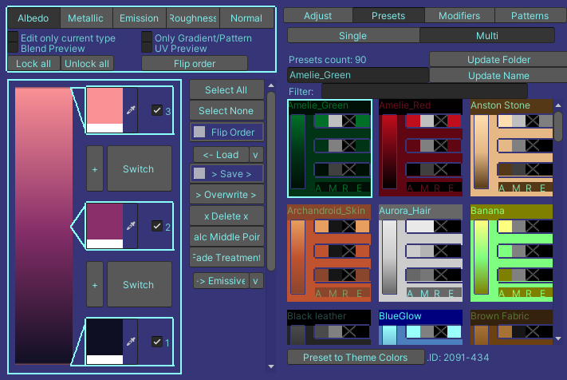
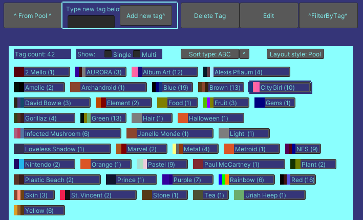
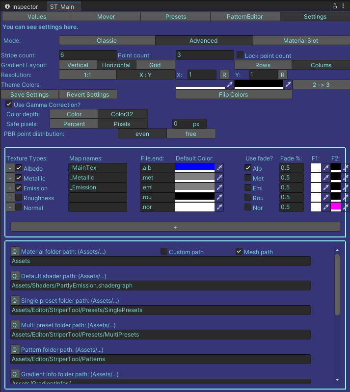

StriperTool
StriperTool (working title) is an Unity tool aimed to help with gradient texturing pipeline. It also supports PBR texture types. The tool is developed by me as a thesis project.
Below there's explanations of all the subtabs.
Values
(subtab)
¤ Texture Type Area
- Buttons for all the PBR types.
- Locks for Gradients
¤ Single Gradient Area
- Preview of the current gradient.
- Stops of the selected gradient.
- Flexible gradient count.
¤ Middle buttons
- Select All: Selects all stops.
- Select None: Deselects all stops.
- Flip Order: Flips order of stops.
- Load: Loads selected Preset to selected Gradient.
- Save: Saves selected Gradient to Presets.
- Overwrite: Overwrites selected Presets with current colors.
- Delete: Deletes the selected preset.
- Calc Middle Point: Calculates the middle point by using previous and next points.
- Fade Treatment: Calcutes the lighter and darker stops by using middle color and Setting subtab's Texture Type values.
To Emissive: Copies selected Albedo values to Emissive values, mixing them with black based on a fed % value.
¤ 3rd Section
Adjust
- HUE, Saturation, Brightness.
Presets
- Single and Multi Presets.
Modifiers
---In Development---
Patterns
- Loaded patterns.
- Blending options.
Presets
(subtab)
¤ Top button row:
From Pool: Adds the selceted tag from pool to the selected presets.
Add new tag: adds the written tag to
¤ Flexible gradient count.
¤ Flexible gradient count.
Settings
(subtab)
¤ Comes with 3 modes:
-- Classic: Based on known counts.
-- Advanced: Based on a seperate info file.
-- Material Slot: Uses multiple materials and material slots.
Settings for gradient layout.
Vertical/Horizontal/Grid
Rows/Columns
Resolution: 1:1 / X:Y
Theme Colors
Save pixels
Added pixels to prevent color leakage.
Stop/Point distribution
Even / Free
PBR Texture Type Settings
Bool for used ones.
Map Names
Strings used by shaders.
File end
String end for the written texture file.
Default Color
Default color for added gradient.
Use Fade -bool
Fade prosent
Fade color 1 (F1)
Color that's use for light side fade.
Fade color 2 (F2)
Color that's use for dark side fade.
Path listing
Material Folder path
Default shader path
Single Preset Folder path
Multi Preset Folder path
Pattern folder path
Gradient info folder path
Gradient objeck informations are saved here.
eejoki ©